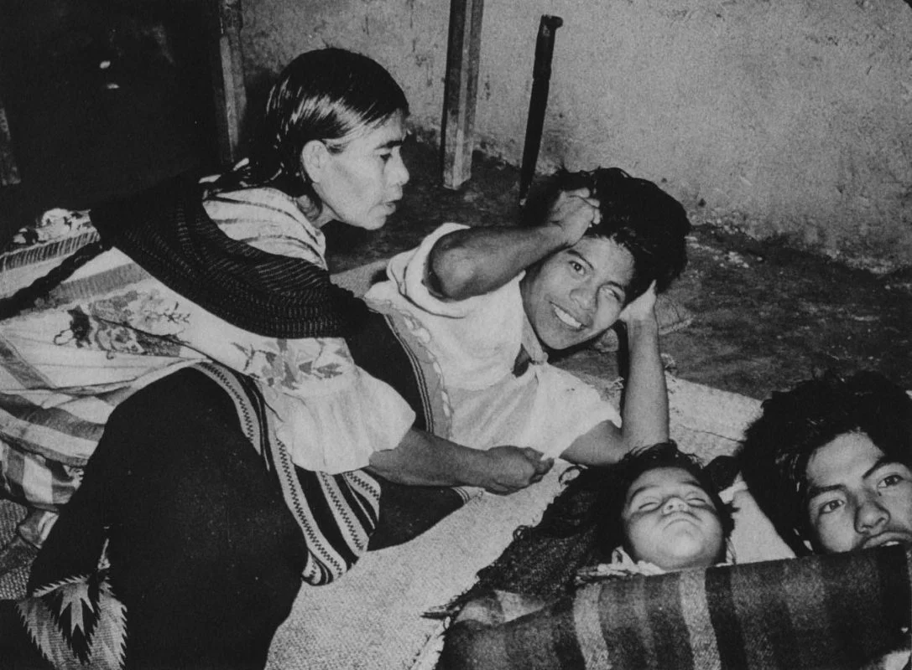
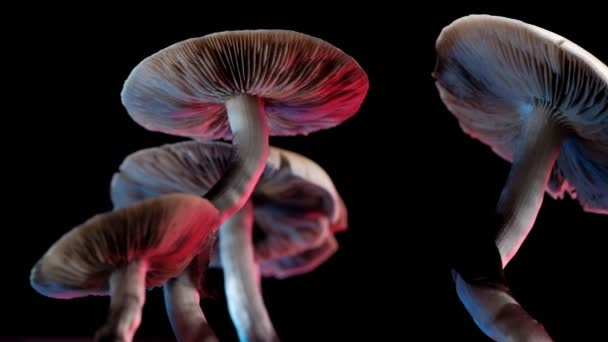

Healing Methods
“I am wise even from within the womb of my mother. I am the woman of the winds, of the water, of the paths, because I am known in heaven, because I am a doctor woman.”
– María Sabina Magdalena García
Among the Mazatec people, the most common healing method since prior
to the colonial period, was the ritual intake of fungi of a species
called Mexican Psilocybe and which grow only in a particular mountain
range. When visited by someone with some physical or spiritual condition,
Sabina served as a guide on the patient’s journey to, and return from,
spiritual realms (along with a cure for the illness). To Sabina, mushrooms
were an instrument for connecting dimensions and realities that happen in
parallel. Because of their peculiarity, intensity, and various reports of
effectiveness, Sabina’s healing sessions became very popular in the Mexico
of the early 1950s.


The Velada Ritual
María Sabina was well-respected in the village as a healer and shaman.
She’d been consuming psilocybin mushrooms regularly since she was seven years old, and had performed
the velada mushroom ceremony for over 30 years before Wasson arrived.
The intention of the all-night velada was to commune with God to heal the sick. The spirits, if effectively contacted,
would tell Sabina the nature of the sickness and the way it could be healed. Vomiting by the afflicted was considered an essential
part of the ceremony. Each participant in the ritual would ingest psilocybin mushrooms as Sabina (who typically ingested twice as much)
chanted invocations to coax forth the divine.